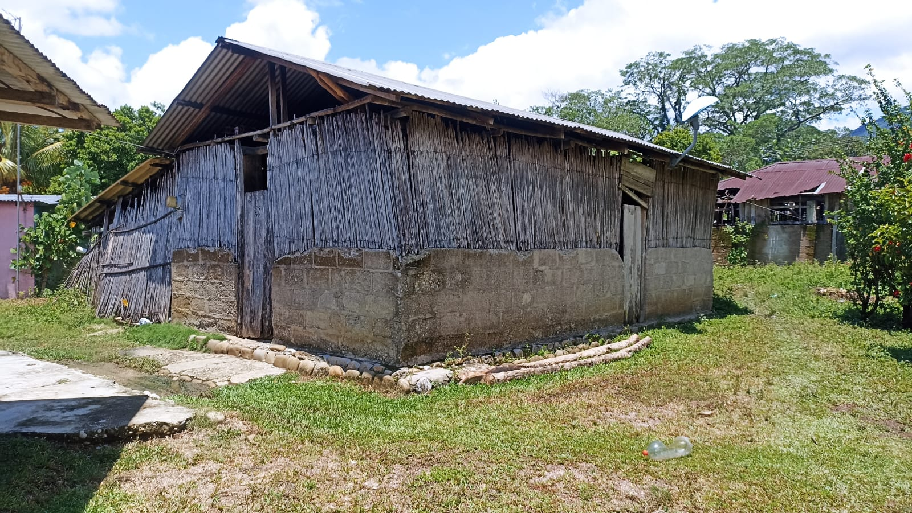

Iwokolel lumaläl
Jiñäch bajche’ wa’al kuxulob, ka’bä bajche’ yujilob chumtyäl kixtyañojob che’ bajche’ ity’añob tyi Méxicu li xch’olob yujilo’bä lak yokejty’añ chukuyob tyi municipio cha’añ Tabascu, jiñ ñoj wokolbä bajche’ chumulo’b k’älä che’ñak tyi tyejchi ichajpañob ichumli’ob, che’ bajche’ mi ñusak’iñob, chäch bajche pejtyelumtyak, ajpañ tsiki ik’otyayaj lix CH’olob cha’añ ñoj weñ mi’ mejlel utsaty ichumtyañob cha’añ lajal mi ipuko’b ibä chäbä año’b icha’añob. Jasäjach tyi k’elol bajche’ chumulob jiñi xchòlob, mik ña’tyañla bajche’ iwokolel bajche’ mi ñusaño’b k’iñ Tyi tyajleyob 55 xchumtyälob yujiyo’bä lakyokety’añ ojli año’ tyi Tacotalpa, Nacajuca, Balancán, Macuspana, Tenosique y Centro. Tyi’pejtyelel iliyob 25 ajchumtyälob año’bä tyi grupo “A” yi’k’oty ajchumtyälob ajch’olobä li 70 % o ñoj weñ tyemelob, yi’k’oty 30 lumalil año’bä tyi grupo “B”, yaba’li xchumtyälob mi’läk’ibä tyi 40% y 60%, ajpa añbä yaba’ mi ipäsob bajche’ chumälob yik’oty lakty’añob tyi lak chumli’b. Li ajchumtyälo’b ch’olo’bä wokolächbi bajche’ chumulo’b, wokolbi mi ityajo’b tyak’iñ kuxulo’bi chä’bätyak mi ipäk’ob tyi ilumo’b, bajche’: ixim, bu’ul, ch’ujm, yik’oty yañtyakb päk’äbäl, añ iwokolel chumtyal añ k’iñil añ chäkík’lel, oche’ mi iwa’tyä k’iñ mi yäsäyel ipä’bälelob che jiñi mach mej ichoñob y mach mej ilok’sañ cha’añ ik’uxob. yambä iwolokolel jiñi ajch’olob jiñäch bajche jiñi ibijlelo’b baki mi iñäme ik’axelob tyi troñel yiko´tyi imalil ilumal ma´añ jiñi xcarretere boñolbä bajeche’ xkaxlañob. Kome ma’añ utsaty pätyäl ibijlelob, ñoj wokol baki ityajob ik’ejlelob chä’bä yomob tyi tyojle. Li xcho´olob käla¨xtyobi iwokolelob mi iñusañob k’iñ ora, ma’añ bi icha’añob, jiñi kaxlañ k’ajk, che’ je’el bajche’ ja’, yik’oty iñämi’ tya’äl. Li käñtyisäñtyel wokolächbi je’el, mik ña’tyañla jiñi ñopjuñ, jiñäch muk’bä ijam lakpensal cha’añ mi ikolel lakña’tyi’bal, jiñi käñtyisäñtyel ma’añ mi iweñ k’otyel tyi ityojlelob xkolelob, mach pejtyelek mi ik’otyelob tyi ityojlel. Li käñtyisätyel tyi ityojlelob bi’tyalob muk’uxtyobi its’insaj k’otyel ibaj, mach mi che’ icha’añob bä jiñi ajse’e kolelobä. Jiñcha’añ ka’bäl machbä yujilob k’ejuñ tyi laklumal. Jiñi ajchumtyälob yujilo’bä lakty’añ CH´ol tyi Tabasku yikotyi añtyakbä ajchumtyälob yujilo’bä lakty’añ CH´ol weñ añ iwokolel ma´añ mi kotyiñtyelob che’ ma´añ chuki machbä melj icha’leñob jujunp’ej lum, ma´añ mi lok´ob tyi wenta che’weñ yomox kotyäñtyel tyi tyojlel x-etyelob tyi aña’tyä cha’añ mi mejel uts’aty mi yajñelob tyi chumtyäl tyi lumal.

Problemas sociales
Dentro del vasto mosaico de la diversidad cultural y étnica de México, los Ch'oles, una comunidad indígena asentada en los municipios de Tabasco, se ven inmersos en una realidad marcada por una serie de problemas sociales que resuenan con profundidad en su cotidianidad. Estos desafíos, arraigados en su contexto histórico, cultural y geográfico, pintan un panorama que refleja la lucha de los Ch'oles por un futuro más equitativo y próspero.
Una mirada a la demografía de estas localidades indígenas revela la complejidad de su presencia. Se han identificado 55 localidades Ch'oles que cumplen con las características que definen a las poblaciones indígenas, y se distribuyen principalmente en municipios como Tacotalpa, Nacajuca, Balancán, Macuspana, Tenosique y Centro. Entre estas, 25 localidades del tipo A, con una población indígena que representa el 70% o más de la total, y 30 localidades del tipo B, donde la presencia indígena oscila entre el 40% y 60%, resaltan como espacios donde la identidad cultural y lingüística Ch'ol se entrelaza con la vida diaria.
Sin embargo, la vida en estas localidades no está exenta de desafíos. Desde el punto de vista socioeconómico, los Ch'oles enfrentan dificultades notorias en áreas cruciales de sus vidas. La agricultura de subsistencia emerge como una actividad esencial, siendo la principal fuente de obtención de alimentos básicos como maíz, frijol, calabaza y otros. Esta dependencia puede ser una fuente de fortaleza cultural, pero también presenta vulnerabilidades, ya que está sujeta a condiciones climáticas impredecibles y a limitaciones en la diversificación económica.
La accesibilidad es otro obstáculo que afecta a estas comunidades. Muchas localidades carecen de carreteras pavimentadas, lo que dificulta el acceso a servicios esenciales y oportunidades económicas fuera de sus confines. En esta realidad, la conectividad es más que un tema logístico; es una línea que define la separación entre oportunidad y marginación.
Los Ch'oles también enfrentan carencias en infraestructura básica. La falta de servicios públicos, como agua potable y drenaje, crea dificultades en su calidad de vida. Además, la educación se torna un reto. A pesar de ser una herramienta vital para el progreso, las políticas educativas insuficientes limitan la existencia de instalaciones educativas en las localidades indígenas. Aunque la educación básica está relativamente más disponible, los niveles superiores de educación enfrentan limitaciones significativas. Esto contribuye a altos niveles de analfabetismo y a un menor acceso a oportunidades educativas para la población Ch'ol.
Los Ch'oles en Tabasco, como muchas otras comunidades indígenas en México, enfrentan una serie de desafíos sociales que impactan directamente en su calidad de vida y oportunidades. Desde la dependencia en la agricultura de subsistencia hasta la falta de servicios públicos y oportunidades educativas limitadas, su realidad es un recordatorio de la urgente necesidad de abordar las inequidades y trabajar en colaboración para un futuro más inclusivo y justo.